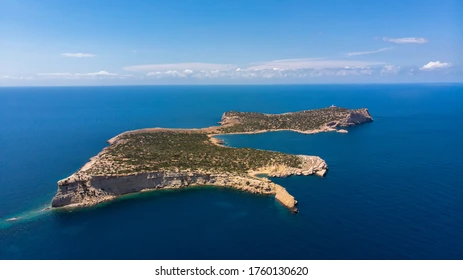
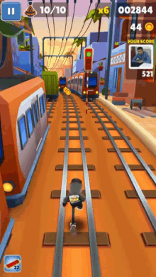

Idees principals
Mallorca, Menorca i el subarxipelag de Cabrera

Illots principals
Dragonera, Conejera i Illa de l'Aire
Origen del nom
Prové del grec antic Gymnesiai derivat de gymnos(desnudo). Els grecs i fenicis els anomenaren així perquè els seus habitants lluitaven lleugers. Foners

Illes pitiuses
Illes al sudest de la península
Illes pitiuses
Illes principals
Conillera
Es Vderà

Tagomago
Espadrell
S'Espalmador

Eivissa i Formentera
Illots destacats

Origens del nom
Perque aquest nom?
Els navegants grecs els varen anomenar així pels densos boscs de pins carrascs que cobreixen les seves montanyes
